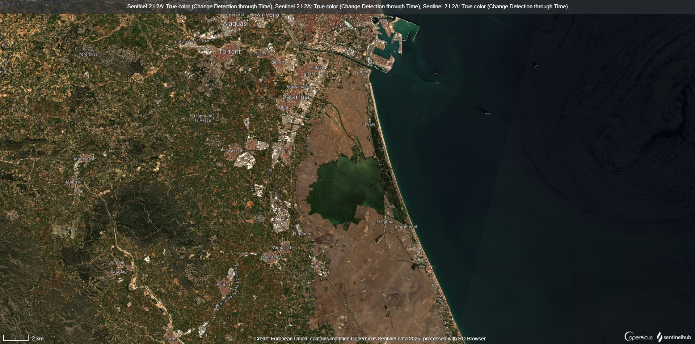

Nei giorni immediatamente successivi al disastro, la situazione nella città di Valencia e nelle aree circostanti si è presentata come drammatica. Interi quartieri risultavano devastati, con strade impraticabili, macerie ovunque e danni strutturali diffusi. La metropolitana cittadina è rimasta chiusa per mesi a causa degli allagamenti che avevano compromesso l'intero sistema elettrico e meccanico. Molte scuole non sono riuscite a riaprire nei tempi previsti, mentre centinaia di edifici pubblici e privati sono stati dichiarati inagibili o addirittura da demolire. Le operazioni di pulizia e messa in sicurezza hanno richiesto settimane, e la ripresa delle attività quotidiane è stata lenta e faticosa.
.gif)
Il governo spagnolo ha risposto con un massiccio piano straordinario di ricostruzione, stanziando oltre 30 miliardi di euro. Questi fondi sono stati destinati non solo alla riparazione dei danni materiali, ma anche alla messa in sicurezza dei corsi d’acqua, alla riqualificazione delle infrastrutture critiche e alla creazione di sistemi di allerta precoce più efficaci. Oggi, nonostante le ferite ancora visibili, Valencia si presenta come una città resiliente e determinata a guardare al futuro. Sono stati avviati numerosi progetti per aumentare la sostenibilità urbana, migliorare il sistema di drenaggio delle acque piovane e preparare la popolazione ad affrontare eventi climatici estremi con maggiore consapevolezza e preparazione.
